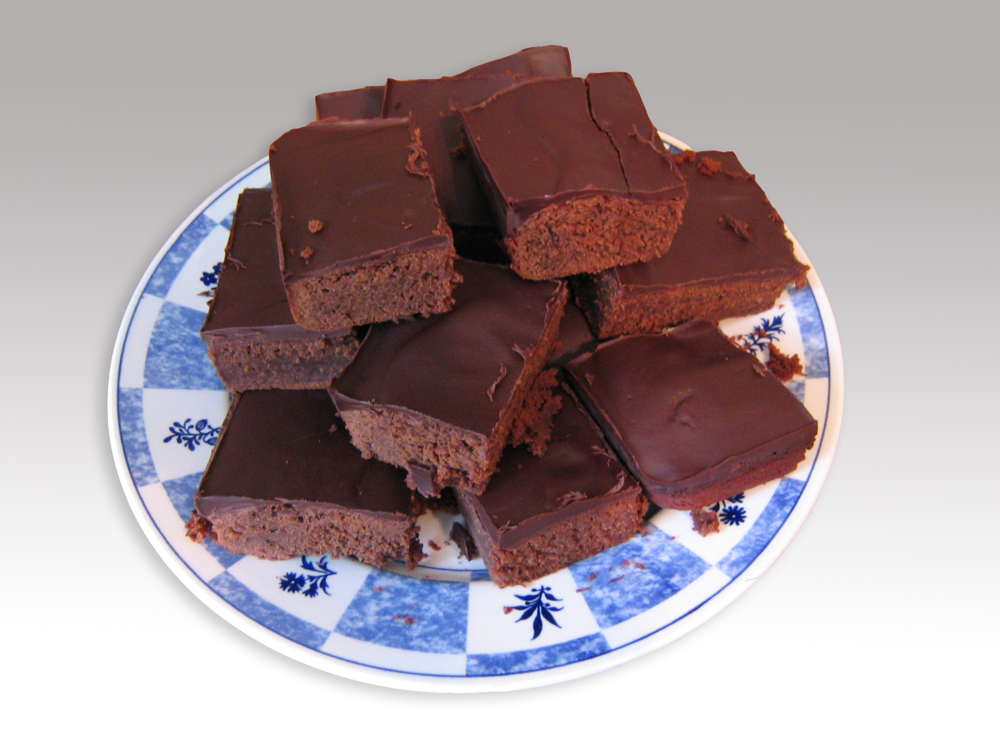

Brownie Recipe
| Ingredients | Amount |
|---|---|
| unsalted butter sticks | 2 |
| all-purpose flour | 1 1/2 cups |
| unsweetned cocoa powder | 1/3 cup |
| fine salt | 1/2 teaspoon |
| chocolate | 4 ounces |
| sugar | 2 cups |
| large slightly beaten eggs | 4 |
Directions:
- Preheat the oven to 350 degrees.
- Line a 9-by-13-inch baking pan with foil, leaving a 2-inch overhang on at least 2 sides.
- Butter the foil.
- Whisk together the flour, cocoa powder and salt in a medium bowl.
- Melt the butter and chocolate in a medium saucepan over medium heat, stirring frequently.
- Let cool slightly. Stir in the sugar and eggs. Add the flour mixture, and stir to combine.
- Pour the batter into the prepared pan, and bake until a toothpick comes out with just a few crumbs, 30 to 35 minutes.
- Let the brownies cool completely in the pan on a cooling rack. Use the foil overhang to help lift them out of the pan.
- Cut into 16 squares. Store in an airtight container at room temperature for up to 3 days